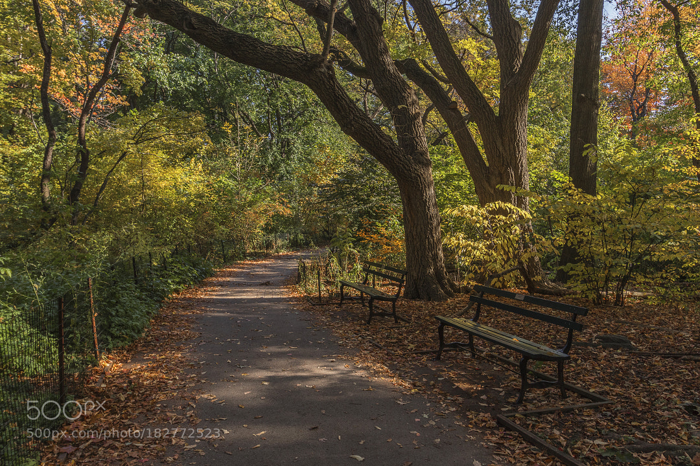
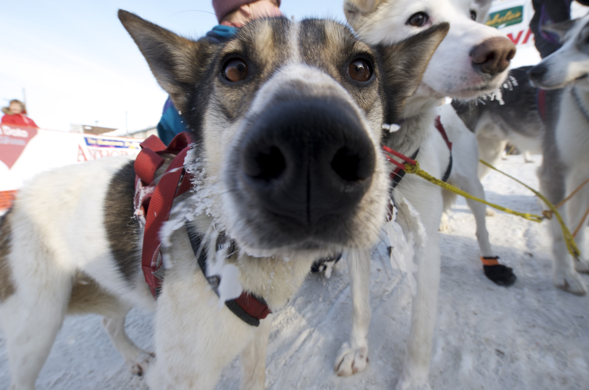

On her way inside the park, she runs into her friend.
Licensed under CC-BY-NC-ND 3.0
Original source via 500px
A friend for a walk.On her way inside the park, she stops ands plays with a friendly puppy.
Licensed under CC-BY 2.0
Go to puppy choice.